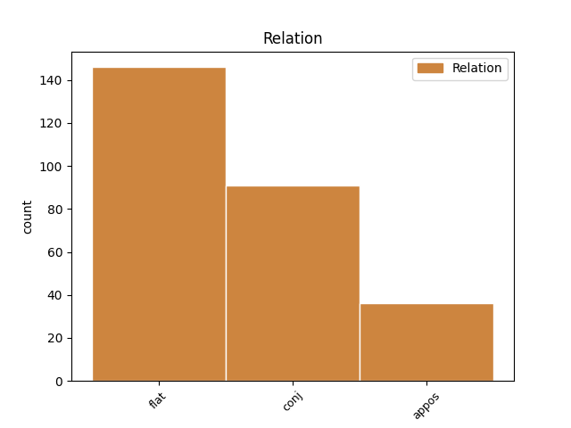
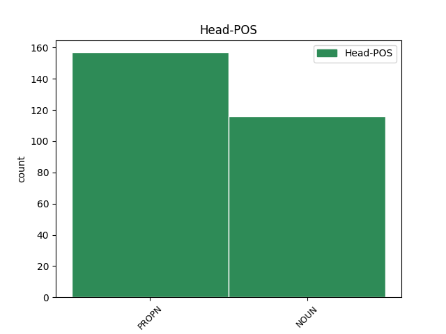
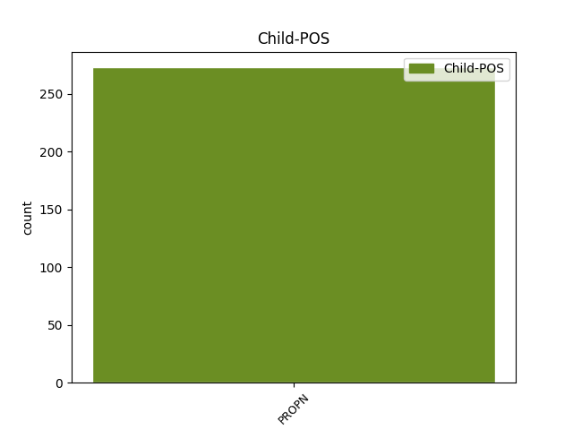

Distribution of features within this leaf



Agreement Rules sorted by frequency.
- When the dependent token is the flat multiword expression(flat) of the head token, and the dependent token is PROPN.
1 Από _ _ _ _ 0 _ _ _
2 τη _ _ _ _ 0 _ _ _
3 πλευρά _ _ _ _ 0 _ _ _
4 του _ _ _ _ 0 _ _ _
5 ο _ _ _ _ 0 _ _ _
6 Πρωθυπουργός _ _ _ _ 0 _ _ _
7 του _ _ _ _ 0 _ _ _
8 Ισραήλ _ _ _ _ 0 _ _ _
9 , _ _ _ _ 0 _ _ _
10 Βενιαμίν _ _ _ _ 0 _ _ _
11 Νετανιάχου _ _ _ _ 0 _ _ _
12 , _ _ _ _ 0 _ _ _
13 εξέφρασε _ _ _ _ 0 _ _ _
14 ικανοποίηση _ _ _ _ 0 _ _ _
15 για _ _ _ _ 0 _ _ _
16 το _ _ _ _ 0 _ _ _
17 σχόλιο _ _ _ _ 0 _ _ _
18 του _ _ _ _ 0 _ _ _
19 Μπαράκ Μπαράκ PROPN PROPN Case=Gen|Gender=Masc|Number=Sing 0 _ _ _
20 Ομπάμα Ομπάμα PROPN PROPN Case=Gen|Gender=Masc|Number=Sing 19 flat _ _
21 ότι _ _ _ _ 0 _ _ _
22 « _ _ _ _ 0 _ _ _
23 θα _ _ _ _ 0 _ _ _
24 εξεταστούν _ _ _ _ 0 _ _ _
25 όλες _ _ _ _ 0 _ _ _
26 οι _ _ _ _ 0 _ _ _
27 εναλλακτικές _ _ _ _ 0 _ _ _
28 λύσεις _ _ _ _ 0 _ _ _
29 αναφορικά _ _ _ _ 0 _ _ _
30 με _ _ _ _ 0 _ _ _
31 το _ _ _ _ 0 _ _ _
32 πυρηνικό _ _ _ _ 0 _ _ _
33 πρόγραμμα _ _ _ _ 0 _ _ _
34 του _ _ _ _ 0 _ _ _
35 Ιράν _ _ _ _ 0 _ _ _
36 » _ _ _ _ 0 _ _ _
37 . _ _ _ _ 0 _ _ _
1 Οι _ _ _ _ 0 _ _ _
2 Αρχές _ _ _ _ 0 _ _ _
3 της _ _ _ _ 0 _ _ _
4 Μισουράτας Μισουράτας PROPN PROPN Case=Gen|Gender=Fem|Number=Sing 0 _ _ _
5 ( _ _ _ _ 0 _ _ _
6 ή _ _ _ _ 0 _ _ _
7 Μισράτας Μισράτας PROPN PROPN Case=Gen|Gender=Fem|Number=Sing 4 conj _ SpaceAfter=No
8 ) _ _ _ _ 0 _ _ _
9 , _ _ _ _ 0 _ _ _
10 της _ _ _ _ 0 _ _ _
11 τρίτης _ _ _ _ 0 _ _ _
12 μεγαλύτερης _ _ _ _ 0 _ _ _
13 πόλης _ _ _ _ 0 _ _ _
14 σ _ _ _ _ 0 _ _ _
15 τη _ _ _ _ 0 _ _ _
16 Λιβύη _ _ _ _ 0 _ _ _
17 , _ _ _ _ 0 _ _ _
18 εξέφρασαν _ _ _ _ 0 _ _ _
19 την _ _ _ _ 0 _ _ _
20 επιθυμία _ _ _ _ 0 _ _ _
21 τους _ _ _ _ 0 _ _ _
22 για _ _ _ _ 0 _ _ _
23 καθεστώς _ _ _ _ 0 _ _ _
24 ημιαυτονομίας _ _ _ _ 0 _ _ _
25 . _ _ _ _ 0 _ _ _
1 O _ _ _ _ 0 _ _ _
2 Πρόεδρος πρόεδρος NOUN NOUN Case=Nom|Gender=Masc|Number=Sing 0 _ _ _
3 των _ _ _ _ 0 _ _ _
4 ΗΠΑ _ _ _ _ 0 _ _ _
5 , _ _ _ _ 0 _ _ _
6 Μπαράκ Μπαράκ PROPN PROPN Case=Nom|Gender=Masc|Number=Sing 2 appos _ _
7 Ομπάμα _ _ _ _ 0 _ _ _
8 , _ _ _ _ 0 _ _ _
9 επανέλαβε _ _ _ _ 0 _ _ _
10 την _ _ _ _ 0 _ _ _
11 δέσμευσή _ _ _ _ 0 _ _ _
12 του _ _ _ _ 0 _ _ _
13 ότι _ _ _ _ 0 _ _ _
14 θα _ _ _ _ 0 _ _ _
15 εξεταστούν _ _ _ _ 0 _ _ _
16 όλες _ _ _ _ 0 _ _ _
17 οι _ _ _ _ 0 _ _ _
18 εναλλακτικές _ _ _ _ 0 _ _ _
19 λύσεις _ _ _ _ 0 _ _ _
20 , _ _ _ _ 0 _ _ _
21 συμπεριλαμβανομένης _ _ _ _ 0 _ _ _
22 και _ _ _ _ 0 _ _ _
23 της _ _ _ _ 0 _ _ _
24 στρατιωτικής _ _ _ _ 0 _ _ _
25 αναμέτρησης _ _ _ _ 0 _ _ _
26 , _ _ _ _ 0 _ _ _
27 για _ _ _ _ 0 _ _ _
28 να _ _ _ _ 0 _ _ _
29 μην _ _ _ _ 0 _ _ _
30 αποκτήσει _ _ _ _ 0 _ _ _
31 το _ _ _ _ 0 _ _ _
32 Ιράν _ _ _ _ 0 _ _ _
33 πυρηνικά _ _ _ _ 0 _ _ _
34 όπλα _ _ _ _ 0 _ _ _
35 . _ _ _ _ 0 _ _ _
Disagree Examples:
1 Η _ _ _ _ 0 _ _ _
2 Διεθνής _ _ _ _ 0 _ _ _
3 Επιτροπή _ _ _ _ 0 _ _ _
4 του _ _ _ _ 0 _ _ _
5 Ερυθρού _ _ _ _ 0 _ _ _
6 Σταυρού _ _ _ _ 0 _ _ _
7 ανακοίνωσε _ _ _ _ 0 _ _ _
8 ότι _ _ _ _ 0 _ _ _
9 « _ _ _ _ 0 _ _ _
10 η _ _ _ _ 0 _ _ _
11 Επικεφαλής _ _ _ _ 0 _ _ _
12 των _ _ _ _ 0 _ _ _
13 Ανθρωπιστικών _ _ _ _ 0 _ _ _
14 Υπηρεσιών _ _ _ _ 0 _ _ _
15 των _ _ _ _ 0 _ _ _
16 Ηνωμένων _ _ _ _ 0 _ _ _
17 Εθνών _ _ _ _ 0 _ _ _
18 , _ _ _ _ 0 _ _ _
19 Βάλερι _ _ _ _ 0 _ _ _
20 Έιμος _ _ _ _ 0 _ _ _
21 , _ _ _ _ 0 _ _ _
22 μετέβη _ _ _ _ 0 _ _ _
23 την _ _ _ _ 0 _ _ _
24 Τετάρτη _ _ _ _ 0 _ _ _
25 σ _ _ _ _ 0 _ _ _
26 την _ _ _ _ 0 _ _ _
27 συνοικία συνοικία NOUN NOUN Case=Acc|Gender=Fem|Number=Sing 0 _ _ _
28 Μπάμπα Μπάμπα PROPN PROPN Case=Nom|Gender=Masc|Number=Sing 27 flat _ _
29 Αμρ _ _ _ _ 0 _ _ _
30 , _ _ _ _ 0 _ _ _
31 της _ _ _ _ 0 _ _ _
32 πόλης _ _ _ _ 0 _ _ _
33 Χομς _ _ _ _ 0 _ _ _
34 σ _ _ _ _ 0 _ _ _
35 τη _ _ _ _ 0 _ _ _
36 Συρία _ _ _ _ 0 _ _ _
37 , _ _ _ _ 0 _ _ _
38 μια _ _ _ _ 0 _ _ _
39 εβδομάδα _ _ _ _ 0 _ _ _
40 μετά _ _ _ _ 0 _ _ _
41 την _ _ _ _ 0 _ _ _
42 αποχώρηση _ _ _ _ 0 _ _ _
43 των _ _ _ _ 0 _ _ _
44 ανταρτών _ _ _ _ 0 _ _ _
45 από _ _ _ _ 0 _ _ _
46 την _ _ _ _ 0 _ _ _
47 περιοχή _ _ _ _ 0 _ _ _
48 » _ _ _ _ 0 _ _ _
49 . _ _ _ _ 0 _ _ _
1 Η _ _ _ _ 0 _ _ _
2 Διεθνής _ _ _ _ 0 _ _ _
3 Επιτροπή _ _ _ _ 0 _ _ _
4 του _ _ _ _ 0 _ _ _
5 Ερυθρού _ _ _ _ 0 _ _ _
6 Σταυρού _ _ _ _ 0 _ _ _
7 ανακοίνωσε _ _ _ _ 0 _ _ _
8 ότι _ _ _ _ 0 _ _ _
9 « _ _ _ _ 0 _ _ _
10 η _ _ _ _ 0 _ _ _
11 Επικεφαλής _ _ _ _ 0 _ _ _
12 των _ _ _ _ 0 _ _ _
13 Ανθρωπιστικών _ _ _ _ 0 _ _ _
14 Υπηρεσιών _ _ _ _ 0 _ _ _
15 των _ _ _ _ 0 _ _ _
16 Ηνωμένων _ _ _ _ 0 _ _ _
17 Εθνών _ _ _ _ 0 _ _ _
18 , _ _ _ _ 0 _ _ _
19 Βάλερι _ _ _ _ 0 _ _ _
20 Έιμος _ _ _ _ 0 _ _ _
21 , _ _ _ _ 0 _ _ _
22 μετέβη _ _ _ _ 0 _ _ _
23 την _ _ _ _ 0 _ _ _
24 Τετάρτη _ _ _ _ 0 _ _ _
25 σ _ _ _ _ 0 _ _ _
26 την _ _ _ _ 0 _ _ _
27 συνοικία _ _ _ _ 0 _ _ _
28 Μπάμπα _ _ _ _ 0 _ _ _
29 Αμρ _ _ _ _ 0 _ _ _
30 , _ _ _ _ 0 _ _ _
31 της _ _ _ _ 0 _ _ _
32 πόλης πόλη NOUN NOUN Case=Gen|Gender=Fem|Number=Sing 0 _ _ _
33 Χομς Χομς PROPN PROPN Case=Nom|Gender=Masc|Number=Sing 32 flat _ _
34 σ _ _ _ _ 0 _ _ _
35 τη _ _ _ _ 0 _ _ _
36 Συρία _ _ _ _ 0 _ _ _
37 , _ _ _ _ 0 _ _ _
38 μια _ _ _ _ 0 _ _ _
39 εβδομάδα _ _ _ _ 0 _ _ _
40 μετά _ _ _ _ 0 _ _ _
41 την _ _ _ _ 0 _ _ _
42 αποχώρηση _ _ _ _ 0 _ _ _
43 των _ _ _ _ 0 _ _ _
44 ανταρτών _ _ _ _ 0 _ _ _
45 από _ _ _ _ 0 _ _ _
46 την _ _ _ _ 0 _ _ _
47 περιοχή _ _ _ _ 0 _ _ _
48 » _ _ _ _ 0 _ _ _
49 . _ _ _ _ 0 _ _ _
1 Νέο _ _ _ _ 0 _ _ _
2 διπλωματικό _ _ _ _ 0 _ _ _
3 επεισόδιο _ _ _ _ 0 _ _ _
4 σημειώθηκε _ _ _ _ 0 _ _ _
5 αυτές _ _ _ _ 0 _ _ _
6 τις _ _ _ _ 0 _ _ _
7 μέρες _ _ _ _ 0 _ _ _
8 μεταξύ _ _ _ _ 0 _ _ _
9 της _ _ _ _ 0 _ _ _
10 Κίνας _ _ _ _ 0 _ _ _
11 και _ _ _ _ 0 _ _ _
12 της _ _ _ _ 0 _ _ _
13 Ιαπωνίας _ _ _ _ 0 _ _ _
14 , _ _ _ _ 0 _ _ _
15 οι _ _ _ _ 0 _ _ _
16 σχέσεις _ _ _ _ 0 _ _ _
17 των _ _ _ _ 0 _ _ _
18 οποίων _ _ _ _ 0 _ _ _
19 χειροτέρευσαν _ _ _ _ 0 _ _ _
20 τον _ _ _ _ 0 _ _ _
21 τελευταίο _ _ _ _ 0 _ _ _
22 καιρό _ _ _ _ 0 _ _ _
23 εξαιτίας _ _ _ _ 0 _ _ _
24 της _ _ _ _ 0 _ _ _
25 αγοράς _ _ _ _ 0 _ _ _
26 ( _ _ _ _ 0 _ _ _
27 από _ _ _ _ 0 _ _ _
28 την _ _ _ _ 0 _ _ _
29 Ιαπωνία _ _ _ _ 0 _ _ _
30 ) _ _ _ _ 0 _ _ _
31 τριών _ _ _ _ 0 _ _ _
32 από _ _ _ _ 0 _ _ _
33 τα _ _ _ _ 0 _ _ _
34 οκτώ _ _ _ _ 0 _ _ _
35 νησιά νησί NOUN NOUN Case=Acc|Gender=Neut|Number=Plur 0 _ _ _
36 Σενκάκου Σενκάκου PROPN PROPN Case=Nom|Gender=Neut|Number=Sing 35 flat _ _
37 / _ _ _ _ 0 _ _ _
38 Ντιαογιού _ _ _ _ 0 _ _ _
39 , _ _ _ _ 0 _ _ _
40 τα _ _ _ _ 0 _ _ _
41 οποία _ _ _ _ 0 _ _ _
42 διεκδικεί _ _ _ _ 0 _ _ _
43 και _ _ _ _ 0 _ _ _
44 η _ _ _ _ 0 _ _ _
45 Κίνα _ _ _ _ 0 _ _ _
46 . _ _ _ _ 0 _ _ _
1 Ως _ _ _ _ 0 _ _ _
2 εισηγήτρια _ _ _ _ 0 _ _ _
3 της _ _ _ _ 0 _ _ _
4 εφαρμογής _ _ _ _ 0 _ _ _
5 τόσο _ _ _ _ 0 _ _ _
6 της _ _ _ _ 0 _ _ _
7 πρώτης _ _ _ _ 0 _ _ _
8 , _ _ _ _ 0 _ _ _
9 όσο _ _ _ _ 0 _ _ _
10 και _ _ _ _ 0 _ _ _
11 της _ _ _ _ 0 _ _ _
12 δεύτερης _ _ _ _ 0 _ _ _
13 τρέχουσας _ _ _ _ 0 _ _ _
14 φάσης _ _ _ _ 0 _ _ _
15 του _ _ _ _ 0 _ _ _
16 προγράμματος πρόγραμμα NOUN NOUN Case=Gen|Gender=Neut|Number=Sing 0 _ _ _
17 ΣΩΚΡΑΤΗΣ ΣΩΚΡΑΤΗΣ PROPN PROPN Case=Nom|Gender=Masc|Number=Sing 16 flat _ SpaceAfter=No
18 , _ _ _ _ 0 _ _ _
19 είμαι _ _ _ _ 0 _ _ _
20 ικανοποιημένη _ _ _ _ 0 _ _ _
21 με _ _ _ _ 0 _ _ _
22 αυτήν _ _ _ _ 0 _ _ _
23 τη _ _ _ _ 0 _ _ _
24 θετική _ _ _ _ 0 _ _ _
25 εξέλιξη _ _ _ _ 0 _ _ _
26 . _ _ _ _ 0 _ _ _
1 Η _ _ _ _ 0 _ _ _
2 μεγάλη _ _ _ _ 0 _ _ _
3 σημασία _ _ _ _ 0 _ _ _
4 του _ _ _ _ 0 _ _ _
5 προγράμματος πρόγραμμα NOUN NOUN Case=Gen|Gender=Neut|Number=Sing 0 _ _ _
6 ΣΩΚΡΑΤΗΣ ΣΩΚΡΑΤΗΣ PROPN PROPN Case=Nom|Gender=Masc|Number=Sing 5 flat _ _
7 σ _ _ _ _ 0 _ _ _
8 τον _ _ _ _ 0 _ _ _
9 ευρωπαϊκό _ _ _ _ 0 _ _ _
10 χώρο _ _ _ _ 0 _ _ _
11 εκπαίδευσης _ _ _ _ 0 _ _ _
12 έχει _ _ _ _ 0 _ _ _
13 υπογραμμισθεί _ _ _ _ 0 _ _ _
14 πολλές _ _ _ _ 0 _ _ _
15 φορές _ _ _ _ 0 _ _ _
16 και _ _ _ _ 0 _ _ _
17 είναι _ _ _ _ 0 _ _ _
18 αδιαμφισβήτητη _ _ _ _ 0 _ _ _
19 . _ _ _ _ 0 _ _ _